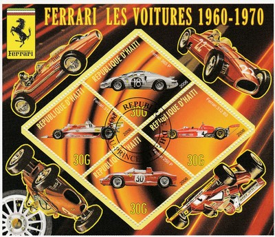
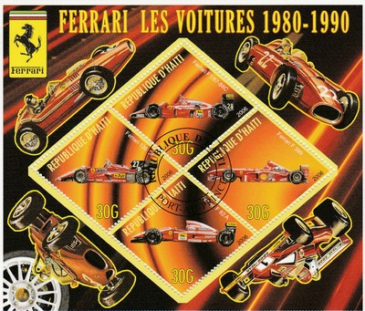
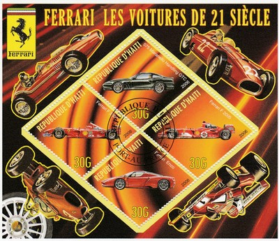

Republic of Haiti
 |
 Issue date: 2006 A sheet of 4 diamond shaped stamps showing some Ferrari cars from 1960 to 1970. The Ferrari 312B was a series of Formula One racing car models, designed and built by Scuderia Ferrari. It was the successor to the Ferrari 312 and was used from 1970 until early 1975. Several versions were made: the 312B, 312B2 and 312B3. The 312 B3, based on a prototype called "snow plough" was introduced in 1974 and was driven by former BRM drivers Niki Lauda and Clay Regazzoni. The car was succeeded by the 312T which was introduced for 1975. The 312T3 was introduced for Gilles Villeneuve and Carlos Reutemann at the third race of the 1978 season. The car featured the same flat 12 engine as had been used since 1970, albeit tuned to give around 515bhp. The chassis was completely new, with a new monocoque structure and a different suspension arrangement, designed to work with the Michelin tyres. The bodywork visibly very different, with a flatter top to the body, allowing improved air flow to the rear wing. All the hard work came to nothing though as the pioneering Lotus 79 ground effect "wing car" took on and beat all comers with ease that season, and Ferrari were left to pick up the pieces of any Lotus failures. Reutemann won 4 races, whilst Villeneuve won for the first time at the final race, his home race in Canada, but it was more a season of consolidation. Reutemann moved to Lotus for 1979, replaced by Jody Scheckter. Ferrari was only 3rd in the Constructors Championship.  Issue date: 2006 A sheet of 4 diamond shaped stamps showing some Ferrari cars from 1980 to 1990. The Ferrari F1/87/88C was driven in 1988 by Michele Alboreto and Gerhard Berger. It came second to McLaren in the Constructors Championship, scoring one pole position at the British Grand Prix at Silverstone and one victory at the Italian Grand Prix in Monza. Although it was the most powerful car of the 1988 field at around 720 bhp, the F1/87/88C's biggest problem was fuel consumption compared to the rival Honda engines used by McLaren. The Ferrari F399 was designed by Rory Byrne for the 1999 season, it allowed Ferrari to take their first constructor's title since 1983. It was driven by Michael Schumacher and Eddie Irvine. The Ferrari F92A was driven, in 1992, by Jean Alesi, and by Ivan Capelli (for most of the season, before he was sacked and replaced by Nicola Larini). The car was most famous for its "double-flat bottom" floor that made it difficult to drive. The car only achieved two podiums and a total of 21 points. The best results were two third places by Jean Alesi. The Ferrari 126C4 was used for the 1984 season, being driven by Michele Alboreto and Rene Arnoux. It was no match for the dominant McLaren MP4/2, however. The 126C4 was the last of the 126C series which replaced the successful 312T series cars; the 126C was Ferrari's first attempt at a turbo car.  Issue date: 2006 A sheet of 4 diamond shaped stamps showing some Ferrari cars of the 21st century. The Ferrari F2001 was a highly successful F1 car, designed by Ross Brawn and Rory Byrne for 2001. The car was designed around new regulation changes which mandated a higher mounted front wing assembly to reduce downforce. This resulted in a distinctive 'droopsnoot' nose and spoon shaped front wing. That season also saw the re-introduction of traction and launch control systems, and the car and its suspension were designed with this in mind. The car was something of a departure over previous Brawn/Byrne Ferrari designs, being more based on McLaren's design thinking. The car did feature Ferrari trademarks, such as the periscope exhausts pioneered by the team in 1998 and the small bargeboards which were a feature of its predecessors. The F2001 used the same basic gearbox and internal layout as its predecessors, however the aerodynamic efficiency and tyre wear were improved considerably over previous Ferraris. The F2001 took 10 wins, 13 pole positions, 4 fastest laps and 197 points in its career. After 6 straight seasons of Ferrari winning the constructors championship, and five straight drivers championships, the F2005 was not a successful car, and Ferrari scored their lowest result in the constructors since 1995. The general consensus was that the main reason for Ferrari's lack of form was down to the Bridgestone tyres the team used, which were poor in comparison to the Michelin tyres that were used by the majority of teams. The best result achieved all season was a first and second placed finish at the United States Grand Prix, where, due to Michelin claiming that their tyres were unsafe, only six cars competed (Ferrari, Jordan and Minardi all raced on Bridgestone tyres, the tyre they had been using all season). This was to be Ferrari's and Michael Schumacher's only race win of the season. |